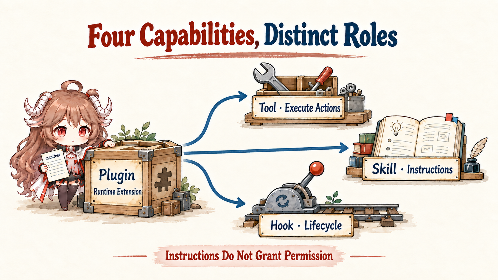
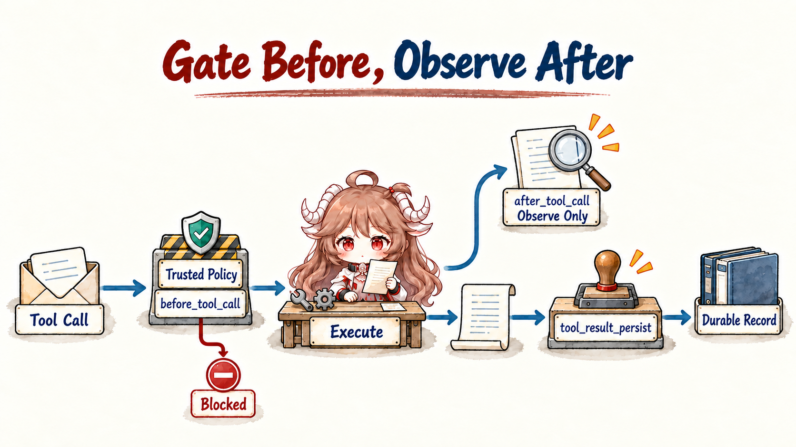

Start with a concrete failure. Alice installed a GitHub plugin and its configuration says enabled, yet the agent says it has no such tool. On another machine the tool appears, but a hook blocks the call. In a third environment the action works, yet the model never follows the project's “test first” workflow. Those failures belong to discovery/exposure, call admission, and workflow guidance. “The plugin is broken” is too coarse to explain any of them well.
OpenClaw's capability system looks complex because it refuses to collapse four different things. A tool is an executable typed action. A skill is operating guidance for the model. A plugin is an installable code owner that registers runtime capabilities. A hook is a checkpoint inside a running lifecycle. Once separated, installation, discovery, presentation, invocation, authorization, and audit can each have a clear owner.
Reading contract.By the end, you should be able to trace where one turn's tool list comes from; say what a plugin manifest proves versus a live registration; explain why optional tools require opt-in; connect skill precedence, eligibility, and snapshots; locate the point where policy removes schemas before a model call; and distinguish what before_tool_call, after_tool_call, and tool_result_persist may change.
Evidence boundary.This chapter remains pinned to e6b4264. The capability surface—especially Tool Search, Code Mode, and plugin contracts—moves quickly. The discussion follows this snapshot and its documentation, without mixing the older internal registerHook bus into the typed api.on(...) lifecycle.
1. What each extension type provides
1.1 Tool, skill, plugin, and hook have separate jobs

| Concept | What it provides | What it does not provide |
|---|---|---|
| Tool | Name, description, parameter schema, and execution. | A complete business workflow by itself. |
| Skill | Instructions for when and how to combine capabilities. | A new implementation or a policy bypass. |
| Plugin | Installable code, manifest, config, and registrations. | Automatic exposure of every registered tool on every turn. |
| Hook | A checkpoint in prompt, tool, message, or session flow. | An independent tool catalog or ordered side-effect bus. |
One plugin may register tools, package skills, add a channel or provider, and subscribe to typed hooks. One skill may teach the model to combine several core and plugin tools. The arrows do not reverse: reading a SKILL.md cannot resurrect exec after policy removed it, and registering a hook does not add a function schema to the model.
1.2 A descriptor defines the call; execute performs the action
The model does not call an arbitrary JavaScript function. It receives a named descriptor with a description and parameter schema. The runtime uses the canonical name to align model output with the local implementation and validates arguments before execution. A plugin tool may add outputSchema for structured details consumed by Tool Search and Code Mode.
api.registerTool({
name: "workflow_tool",
description: "Run one named workflow",
parameters: Type.Object({ pipeline: Type.String() }),
outputSchema: Type.Object(
{ pipeline: Type.String() },
{ additionalProperties: false },
),
async execute(_id, params) {
return {
content: [{ type: "text", text: params.pipeline }],
details: { pipeline: params.pipeline },
};
},
});content feeds the model's next inference. details is runtime metadata for UI, diagnostics, and structured composition. Details are size-bounded for persistence and stripped from provider replay and compaction input. Anything the model must know cannot exist only in details.
2. How the run builds its tool list
2.1 createOpenClawCodingTools gathers candidates
createOpenClawCodingTools does much more than return a constant array. It receives the agent, session, run, workspace, sandbox, message provider, model/provider, sender, client capabilities, skill snapshot, and exec defaults, then constructs the definitions valid for this turn.
The initial candidate pool comes from several owners:
- Core coding tools:read, write, edit, exec/process, apply_patch, created with workspace, sandbox, and exec policy attached.
- Channel tools:login or channel-specific actions from loaded channel plugins.
- OpenClaw tools:message, session, cron, browser, node, memory, media, and other runtime features.
- Plugin and node tools:registry factories materialized with current runtime context, plus tools published by connected nodes.
- Tool Search controls:search, describe, and call entry points for catalogs too large to submit directly.
That pool is only raw material. The function next applies the memory-flush special surface, message-provider and model-provider compatibility, layered policy, delegation capability, client caps, schema projection, and hook wrappers. The returned array—not the installed package list—is this run's executable surface.
2.2 Tool factories bind implementations to the current context
A plugin may register a fixed descriptor or a factory. The factory receives trusted runtime context such as workspaceDir, deliveryContext, channel/account/thread, requesterSenderId, sandbox state, active model, and auth lookup. The same plugin can therefore bind different delivery defaults in a Slack thread and Telegram DM, or decline to materialize when provider credentials are absent.
That does not let a plugin determine all authority. A factory handles availability and binding; every returned tool still enters the host's final policy pass. Otherwise a plugin could return a dangerous action at the last moment and evade agent, group, sender, or sandbox restrictions.
Runtime names remain canonical lowercase. Provider transports can remap names on the wire, but policy, hook matchers, and audit continue to refer to one stable identity rather than provider-specific casing or aliases.
2.3 The manifest declares names; the entry point registers implementations
openclaw.plugin.json lets the Gateway inspect an id, configuration schema, capability contracts, tool metadata, and activation conditions without eagerly executing plugin code. Every name passed to api.registerTool must already appear in contracts.tools. An undeclared registration is diagnosed and rejected.
The reverse is not true either. A name in the manifest does not produce an execute function. Real execution still requires the entry point to load and register a live descriptor or factory. The manifest is the static ownership/discovery contract; registration is the in-process implementation. A mismatch fails closed instead of inferring one side from the other.
The split also lets OpenClaw build metadata snapshots, inspect name collisions, and plan optional exposure without paying the startup effects of every plugin runtime.
2.4 Required tools participate by default; optional tools need selection
A required plugin tool joins the candidate pool whenever its plugin is enabled and runtime conditions are satisfied. An optional tool requires an explicit allowlist match for the tool or plugin group before OpenClaw needs to load its owner and expose it. High-side-effect actions, unusual binary dependencies, and tools used by only a few agents make good optional candidates.
{
tools: {
allow: ["workflow_tool"] // or the plugin id for its tool group
}
}Optional is not an approval mechanism. It decides whether a schema enters the visible surface. Approval occurs after the model selects an already-visible tool and before execute. Confusing them creates the dangerous expectation that an allowlisted optional tool will ask on every call.
2.5 Ordinary tools narrow; host capabilities need separate authority
Ordinary candidates pass through profile, provider-profile, global, provider, agent, agent-provider, group, sender, sandbox, and runtime policy. A restrictive allowlist cannot be undone by a later permissive allow: ["*"]; denials continue to apply. This intersection describes ordinary tool filtering, not every capability the host can create.
There are compatibility gates as well. Message-provider filtering removes actions that cannot work correctly from the ingress surface. Model/provider compatibility handles native-tool collisions and schema support. Explicit non-owner senders lose owner-only control-plane tools. Subagents and scheduled work inherit the parent's effective surface rather than restarting from the global catalog.
The current source also supports a tool bound by the host to one harness run. Only a host-held systemAgentTool with toolsAllow: ["openclaw"] creates this setup capability. It is merged after ordinary filtering so deny-all cannot deadlock setup, and still receives subsequent schema and hook wrappers. Its run scope revokes executable handles when the run settles, including references retained by plugins. Plugin registration and prompt hooks cannot manufacture that host authorization.
2.6 Schema projection adapts to the provider or removes the tool
Providers support different subsets of JSON Schema. Before submission, the runtime normalizes compatible shapes and handles unsupported keywords, name conflicts, and dynamic-tool modes. A tool that cannot be projected safely should leave that runtime surface with diagnostics, not arrive as a half-valid schema the model cannot obey.
Tool Search and Code Mode separate a large catalog from directly submitted schemas. The model searches, reads a descriptor, and invokes a controlled executor. Under the current Tool Search contract, authorized OpenClaw, plugin, MCP, and client tools may enter the catalog. Tools marked catalogMode: "direct-only" keep their direct schemas and stay outside it. Already-direct tools are not duplicated in the directory. Search and execution remain policy-bound; omission from a bounded directory does not revoke authorization.
This transport is not shared by every harness. OpenClaw Tool Search’s code mode runs short JavaScript in an isolated Node subprocess; real calls return to the Gateway for normal policy, approval, hooks, and result handling. This differs from the QuickJS-WASI worker and exec/wait interface of general OpenClaw Code Mode. The Codex harness instead receives dynamic tools, with Codex owning native code mode, tool search, and deferred exposure. It does not receive these experimental OpenClaw Tool Search controls.
// OpenClaw Tool Search code mode, not a native Codex call shape.
const hits = await openclaw.tools.search("create a GitHub issue");
const tool = await openclaw.tools.describe(hits[0].id);
return await openclaw.tools.call(tool.id, {
title: "Crash on startup",
body: "Steps to reproduce...",
});The example separates discovery, parameter-contract lookup, and execution. A search hit identifies a candidate; argument checks, approval, or runtime conditions can still reject the actual call.
3. When skills, plugins, and hooks enter the run
3.1 Skills provide ordered guidance without creating execution power
A skill minimally contains a SKILL.md with name and description frontmatter. OpenClaw discovers same-named skills across workspace, .agents/skills, personal, managed, bundled, and extra/plugin roots, then lets the higher-precedence source win. Directories may be grouped; final identity still comes from the frontmatter name.
Eligibility then filters by agent allowlist, OS, required binaries, environment, configuration, and other metadata gates. Only eligible, model-visible skills enter the compact catalog. The full SKILL.md loads on demand. An explicit $skill reference still resolves against the current agent's eligible set; a name cannot cross visibility policy.
Skill boundary:a skill may say “run exec,” but cannot make exec appear after policy removed it. It may describe where a token comes from, but should not place secrets in the prompt. skills.entries.*.env injects into the host turn and does not automatically enter a sandbox. Guidance, tools, secrets, and isolation retain separate owners.
3.2 Skill snapshots keep one run internally consistent
A new session builds a skills snapshot containing eligible entries, prompt catalog, and fingerprint. Later turns can reuse it instead of walking every root for every message. When the watcher detects changes, preparation marks a refresh and the next turn constructs a replacement snapshot.
The snapshot creates consistency: the system prompt, slash-command discovery, sandbox skill sync, and actual skill read should refer to the same set. If all four scanned independently, a mid-turn change could yield “the prompt advertises it, but the sandbox never received it” or “the catalog contains it, but the file disappeared.”
Connected nodes can publish skills into the normal list and lose them again on disconnect. Local and Gateway skills retain the canonical name on collision; a node skill receives a deterministic prefix so a temporary remote connection cannot hijack local guidance.
3.3 A plugin may register several capability types
A plugin is not merely a tool file. It can own a channel, provider, speech or media service, hooks, Gateway services, and packaged skills. Manifest contracts declare those owners, and activation planning decides when to load them. Tool assembly consumes only the agent-tool facet.
Disabling a plugin and denying one of its tools therefore have different blast radii. Disabling withdraws the owner runtime and its other capabilities. A tool denial removes only an action from a particular agent or run. Narrowing GitHub writes for a writer agent rarely requires uninstalling the plugin that also supplies safe reads and hooks.
Name collision is conservative: a plugin tool cannot replace a core tool. A conflicting registration is skipped and diagnosed. Extension code cannot capture trusted identities such as read or exec to change established semantics.
3.4 Typed hooks run only at declared checkpoints
New plugins register typed lifecycle hooks through api.on(name, handler, options). Handlers that return decisions or modifications run sequentially from higher to lower priority. Observation-only handlers may run in parallel. Priority orders decision composition; it must not be used to coordinate parallel observation side effects.
The older api.registerHook belongs to the internal HOOK.md/event route. Registering a typed name such as before_tool_call through it emits a warning and will not be called by the typed runner. Similar names do not imply the same dispatch bus.
Timeouts carry semantics. Policy hooks fail closed on timeout, so a tool or install cannot continue without a decision. Observation and outbound hooks record errors or continue with the latest payload according to their contracts. Stopping the await does not cancel a handler's internal side effects; long work must bind its own abort signal and shutdown lifecycle.
4. How a tool call reaches execution and persistence
4.1 Policy, hooks, execution, and result persistence run in order

Even after a tool enters the submitted schema, a call does not jump directly to execute. The final wrapper binds agentId, sessionKey/sessionId, runId, workspace, requester, channel/thread, sandbox, and abort signal, then runs:
- Trusted policy:host-trusted gates check workspace, budgets, or reserved workflows first.
- before_tool_call:priority-ordered handlers merge parameter rewrites, terminally block, or request allow-once/allow-always/deny approval. A lower-priority block can still reject after a higher-priority approval request.
- execute:the implementation receives only the final adjusted parameters and obeys abort.
- after_tool_call:observers receive results, errors, and duration for telemetry or synchronization; they return no decision to block or undo execution.
- tool_result_persist:a synchronous transformation runs before the transcript write and bounded-details cap.
Call-time hooks should not replace build-time policy. Build-time filtering removes whole disallowed capabilities from model view. Call-time checks evaluate concrete parameters, resources, and requester identity. Together, the two doors reduce accidental selection and prevent parameter-level escalation.
4.2 before_prompt_build may only reduce the run's tools
A prompt hook may return toolsAllow to intersect the current turn's submitted tools again. Restrictions from several hooks are intersected. This suits “heartbeat may only read state” or “this review turn must not write files.” It cannot re-add a tool already removed by host policy or register an implementation by returning a new name.
Monotonic narrowing is a crucial invariant. A dynamic plugin near the model call knows more about the current situation, but that knowledge cannot grant authority beyond global, agent, or sandbox policy. Dynamic context may reduce privilege, never enlarge it.
4.3 Diagnose discovery, registration, filtering, and execution backward
| Symptom | Inspect first | Typical cause |
|---|---|---|
| Plugin is enabled; tool never appears. | Manifest, runtime inspect, registration diagnostics. | Missing contracts.tools, failed entry load, or name conflict. |
| One agent sees it and another does not. | Effective policy and skill/tool allowlists. | Agent, provider, group, sender, or sandbox narrowing. |
| The model sees it but the call asks for confirmation. | before_tool_call and permission requests. | Call-time approval, not optional exposure. |
| A visible skill's workflow fails. | Underlying tool and binary/env eligibility. | Guidance exists; implementation or dependency does not. |
| The UI shows result data the model misses. | content versus details. | Prompt-relevant data was placed only in details. |
| A hook says registered but never runs. | api.on and typed hook name. | Legacy registerHook was used. |
5. Eight capability-assembly rules to carry forward
- Installed, discovered, registered, exposed, called, and executed are six states.Do not skip one during diagnosis.
- Tools provide action; skills provide method.Guidance cannot create a capability or grant authority.
- The manifest names the owner; registration supplies the live implementation.They must agree.
- A factory binds context; host policy decides final visibility.Plugin availability is not authorization.
- Ordinary tool policy narrows monotonically.Local settings cannot revive denials; separately bound host capabilities have their own authorization and revocation.
- Large catalogs may expand lazily, but authorization cannot be deferred away.Tool Search remains policy-bound.
- Hooks operate only at declared checkpoints.Decision hooks are ordered; observation effects must not depend on priority.
- Build-time and call-time gates complement each other.Shrink schemas first, then inspect concrete parameters and requester.
The next chapter follows those two gates downward. We will separate tool policy, sandboxing, exec approval, and elevated mode: why “inside a container” does not mean “allowed to call,” and why a user's approval does not grant a new identity or authorization scope.
Source references
- agent-tools.ts: core/channel/plugin/search collection, provider and policy filtering, and final wrappers.
- tool-policy-pipeline.ts and effective-tool-policy.ts: layered filtering and the final effective surface.
- openclaw-plugin-tools.ts and registry-registrars-tools-hooks.ts: plugin factory context, contracts, and registration.
- session-preparation.ts: skill snapshot reuse and refresh.
- Tools overview, Skills, Building plugins, and Plugin hooks: official capability contracts.